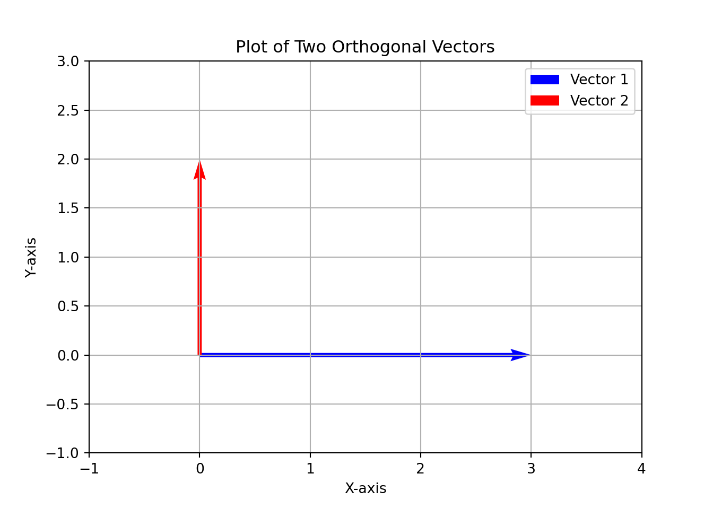

Code
library(geometry)
library(reticulate)
use_condaenv("blues_clues")
u <- c(1, 2)
v <- c(4, 5)
dot(u, v)[1] 14Yang Chen
August 7, 2023
Vectors are an ordered list of numbers in either row orientation \(\vec{v} = [v_1, \ldots, v_n]\) or column orientation \(\vec{v} = \begin{bmatrix} v_1 \\ \cdots \\ v_2 \end{bmatrix}\).
Linear combination of two vectors \(\vec{u}\) and \(\vec{v}\) adds the vectors, possibly with a scalar multiplicatino of one or both of the vectors by constant values \(c\) and \(d\)
\[ c\vec{u} + d\vec{v} \]
Also known as inner product. Takes corresponding entries from \(\vec{u}\) and \(\vec{v}\), multiplies them and sums them \(\sum_{i=1}^{n} u_iv_i\)
\[ \vec{u} \cdot \vec{v} = [u_1, \ldots, u_n] \cdot \begin{bmatrix} v_1 \\ \vdots \\ v_n \end{bmatrix} = \sum_{i=1}^{n} u_iv_i \]
Two vectors are orthogonal when they are perpendicular to each other. This occurs when the dot product between two vectors is 0.
import matplotlib.pyplot as plt
# Define the two orthogonal vectors
vector1 = [3, 0]
vector2 = [0, 2]
# Create a matplotlib figure and axis
fig, ax = plt.subplots()
# Plot the first vector in blue
ax.quiver(
0,
0,
vector1[0],
vector1[1],
angles="xy",
scale_units="xy",
scale=1,
color="blue",
label="Vector 1",
)
# Plot the second vector in red
ax.quiver(
0,
0,
vector2[0],
vector2[1],
angles="xy",
scale_units="xy",
scale=1,
color="red",
label="Vector 2",
)
# Set x and y limits to fit both vectors in the plot
ax.set_xlim(-1, 4)(-1.0, 4.0)(-1.0, 3.0)
The length of a vector is the square root of the vector dotted with itself.
\[ \lVert \vec{v} \rVert = \sqrt{\vec{v} \cdot \vec{v}} \]
A vector is unit is its length is 1. Any vector can be converted toa unit vector or normalized by dividing its entries by its length.
The cosine of the angle \(\theta\) between \(\vec{u}\) and \(\vec{v}\) is the dot product of \(\vec{u}\) and \(\vec{v}\) divided by the product of \(\lVert \vec{u} \rVert\) and \(\lVert \vec{v} \rVert\).
\[ \cos(\theta) = \frac{\vec{u} \cdot \vec{v}}{\lVert \vec{u} \rVert \lVert \vec{v} \rVert} \]
\[ \lVert \vec{u} \cdot \vec{v} \rVert \leq \lVert \vec{u} \rVert \lVert \vec{v} \rVert \]
\[ \lVert \vec{u} + \vec{v} \rVert \leq \lVert \vec{u} \rVert + \lVert \vec{v} \rVert \]
A matrix is a rectangular combination of values arranged as \(m\) rows and \(n\) columns. The size of a matrix is row major.
\[ A = \begin{bmatrix} 1 & 2 \\ 3 & 4 \\ 5 & 6 \end{bmatrix} \]
A is a 3 x 2 matrix
Transpose swaps rows and columns. A transposed row vector is a column vector and vice versa. A transposed matrix \(A^T\) converted the rows of \(A\) to columns and the columns of \(A\) to rows